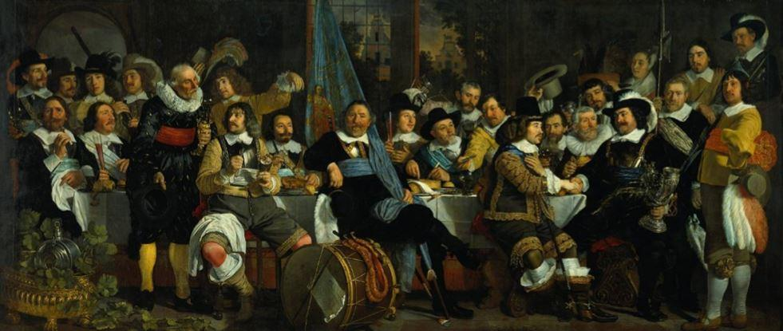
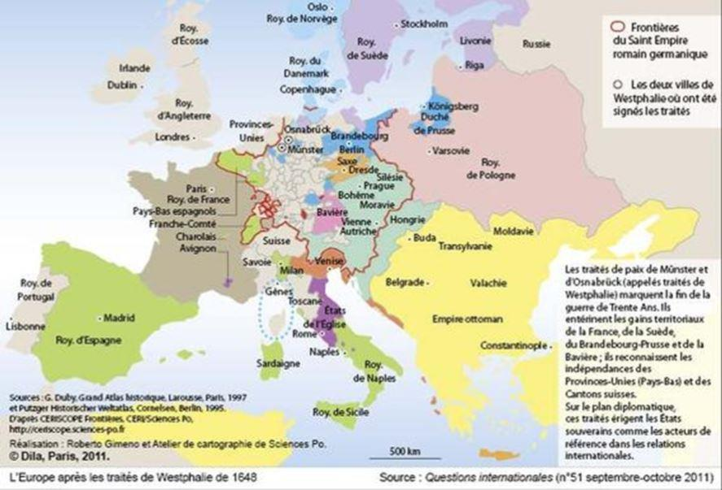

Annonce : une guerre sans merci est actuellement en cours. Grosso modo, cette guerre oppose les « Wasp américains » - qui se sont enrichis par le système de Bretton Woods, lequel a instauré le dollar américain comme monnaie mondiale - aux banquiers qui tiennent la City. Ces derniers sont en train d’instituer ce que Keynes voulait instituer dès 1944 : le Bancor, qui est un panier de monnaies, en tant que monnaie mondiale aujourd’hui appelé Droits de Tirage Spéciaux (DTS). Les enjeux de cette guerre monétaire invisible sont considérables, ils expliquent à eux seuls tous les troubles géopolitiques actuels.
1ÈRE PARTIE : QU’EST-CE QUE L’ÉTAT ?
S’interroger sur les forces respectives de l’État et des banques nécessite, au préalable, de s’intéresser à la signification profonde du pouvoir au sens politique du terme. Que signifie le pouvoir politique, que représente-t-il et quelle est sa justification ? Sont des questions qui sous-tendent toute l’architecture juridico-politique, c’est-à-dire toute l’organisation socio-politique, de l’État. Pour avoir une juste appréciation du concept d’État il faut donc avoir une juste compréhension du concept de pouvoir politique. Donner un sens au concept de « pouvoir politique » (I) permettra de donner un sens à celui « d’État » (II), par une chaine de causalité, il sera ensuite possible de déterminer clairement ce qu’est la souveraineté et à qui elle doit fonctionnellement échoir afin de respecter les concepts ci-dessus énoncés (III).
a) Qu’est-ce que le pouvoir politique ?
Le mot « politique » vient du grec « polis » qui signifie « Cité » ; la politique recouvre donc l’idée du « vivre ensemble », d’organiser la « vie en commun »1.
Au sens propre, la politique consiste donc à organiser la vie en commun à l’intérieur d’un espace géographiquement délimité.
Organiser la vie en commun suppose l’identification, la délimitation, d’un intérêt commun à tous les membres du groupe géographiquement déterminé par la « Cité ».
Cet intérêt commun, propre à la « politique », suppose lui-même que la « politique » ne consiste pas à affirmer et imposer un intérêt catégoriel, ou d’ordre privé, mais au contraire consiste à identifier et à faire prévaloir l’intérêt commun sur la somme des intérêts particuliers qui émanent de ladite Cité, et qui sont consubstantiels à son existence. En effet, aucune Cité n’existe dans un parfait concordat : la vie en commun suppose la confrontation incessante d’une multitude d’intérêts privés ou catégoriels.
Afin de rendre cette vie en commun supportable, il faut donc instituer une sorte « d’arbitre » dont le rôle va consister à trancher entre les différents intérêts contradictoires de façon à instituer un statu quo de nature à apaiser les conflits. Pour être supportable, et donc suivi, ce statu quo doit être perçu comme « juste », ou du moins perçu comme le « plus juste possible en l’état actuel de la situation ».
La politique consiste donc, si les mots en un sens, à arbitrer entre des conflits de façon à rendre possible la vie en commun sur un espace géographiquement délimité.
Élément fondamental de l’organisation sociale, le terme « politique » est donc synonyme d’arbitrage, de justice. À partir de là, il devient possible de discerner le sens primitif du « pouvoir politique ».
En effet, sémantiquement, « pouvoir » signifie « avoir la capacité », c’est-à-dire les moyens concrets, de faire, de réaliser, quelque chose. Appliqué au concept politique, le pouvoir signifie donc la capacité d’imposer l’intérêt commun aux différents intérêts privés ou catégoriels. En d’autres termes, si la politique consiste à déterminer un intérêt commun en opérant des arbitrages perçus comme justes, le pouvoir politique sera le pouvoir de faire matériellement appliquer ces arbitrages, au besoin par la contrainte.
b) Qu’est-ce que l’État ?
Dans l’ordre interne : une entité juridique incarnant l’intérêt commun
Pour que des arbitrages de nature sociologiques et politiques soient effectivement mis en œuvre, y compris, si nécessaire, par la force, il faut que le « pouvoir politique » soit incarné par une institution juridique dotée d’une réalité politique, ce à quoi répond précisément, en interne, la notion juridique « d’État ».
La justification de l’État est également sa raison d’être, c’est-à-dire son signifiant : elle est entièrement comprise dans la notion d’intérêt commun, d’équilibre des forces en présence sur un territoire donné et d’arbitrage dans le sens de la « justice ».
Car il faut bien considérer que les arbitrages qui seront rendus ne seront, à terme, respectés par les justiciables dudit État que s’ils apparaissent globalement justes. Autrement dit, le rôle de l’État ne sera accepté par tous que s’il remplit la fonction qui justifie son existence, celle pour laquelle il existe : garantir le respect d’un équilibre des forces en présence sur le territoire sur lequel il a juridiction.
L’on peut également élargir la perspective et aller chercher le rôle et la fonction de l’entité dénommée « État » dans un ordre juridique externe.
Dans l’ordre international européen : l’État est, depuis les traités de Westphalie du 24 octobre 1648, la recherche d’un équilibre géopolitique des forces
À titre préliminaire, il faut définir le cadre dans lequel s’inscrit le débat.
Si le concept d’État tel que ci-dessus décrit s’est développé dans le monde entier, à mesure que s’imposait l’ordre juridique et politique occidental au reste du monde, il n’en reste pas moins que ce concept est profondément de nature européenne, c’est-à-dire que son signifiant est entièrement compris dans la culture gréco-latine propre à ce que fut l’Europe. Il est donc indispensable, afin de conserver une cohérence au signifiant (le concept d’État), d’en apprécier la réalité externe dans le contexte culturel européen.
Les traités dit de Westphalie (pourparlers de Münster d’un côté et d’Osnabrück de l’autre), signés le 24 octobre 1648, et auxquels ont participé toutes les puissances occidentales à l’exception notoire2 du tsar Russe, du Roi d’Angleterre et du sultan ottoman, a déterminé les principes des États européens.
Le fondement principal de ces traités internationaux, a été la recherche d’un équilibre des puissances politiques qui s’exerçaient en Europe à cette époque : aucun État ne devait être plus puissant que tous les autres réunis3.
Jusqu’à la disparition, en 1806, du Saint Empire Romain Germanique les traités de Westphalie ont géré l’équilibre des forces géopolitiques en Europe. L’Empire est morcelé en trois cent cinquante petits États, sonnant le glas de la puissance des Habsbourg. Les grands gagnants de ce traité avaient été la Suède, les Pays-Bas et la France.
Contrairement à ce qu’en ont dit certains, le concept de l’État westphalien n’est pas mort au XXème siècle. Ou plutôt : s’il est mort en apparence, son signifiant a survécu car la paix qui s’est installée en Europe au sortir de la seconde GM doit tout au concept d’équilibre des forces mis en œuvre par les traités de Westphalie. C’est en effet sur ce principe de l’équilibre des forces que fut fondé la paix qui a suivi la seconde guerre mondiale, due à l’équilibre de la terreur nucléaire qui existait entre les blocs de l’ouest dirigé par les États-Unis et de l’est communiste dirigé par l’Union soviétique. Ce ne sont bien entendu pas les instances européennes, pas encore nées ou balbutiantes, qui ont généré la paix en Europe depuis 1945 mais bien l’équilibre de la terreur ; équilibre des forces qui avait déjà prévalu lors des traités de Westphalie. La forme change mais le signifiant perdure.
Au sens géopolitique européen du terme, l’État doit donc être une entité disposant d’une autonomie suffisante pour garantir la sécurité de ses ressortissants ; cette entité doit, selon les principes westphaliens, être capable de se mesurer, seul ou avec ses alliés, à des voisins plus puissants.
Notons qu’aujourd’hui, la taille géographique ne semble plus être le critère déterminant qu’il fut à l’origine. Les capacités techniques ont pris de telles proportions dans tous les domaines, militaires mais aussi énergétiques, biologiques, que les États seront davantage ceux capables de développer des idées techniques et technologiques créatrices que ceux détenant des matières premières ; même s’il est évident que la détention de matière premières reste un avantage comparatif très important. Mais cet avantage n’est plus dirimant, il peut aujourd’hui être compensé par des échanges, de type « bien contre service », entre États.
La capacité créatrice et l’ingéniosité des ressortissants d’un État peuvent à eux seuls garantir que l’État en question sera en mesure d’assurer la sécurité intérieure et extérieure dudit État.
c) Qu’est-ce que la souveraineté, et à qui échoit-elle ?
Si l’on part des présupposés de l’État décrits ci-dessus, la souveraineté ne peut appartenir, formellement, qu’à l’État. Le vocabulaire juridique décrit en effet la souveraineté comme étant le caractère suprême d’une puissance qui n’est soumise à aucune autre.
Toutefois, cette analyse est insuffisante car il faut encore déterminer comment la souveraineté est exercée et comment sera garanti le fait que la souveraineté sera échue à un État représentant effectivement l’intérêt commun de ses membres. Autrement dit, une fois établi que l’État est l’objet de la souveraineté, il faut encore analyser le sujet de cette souveraineté.
« L’État » décrit ci-dessus est composé d’individus vivant sur un territoire délimité et qui acceptent de se doter d’institutions chargées d’organiser leur vie en commun. Dans ce sens, le « sujet » de la souveraineté est la population vivant sur le territoire en question. Nous retrouvons ici l’idée politique de « peuple souverain » qui a émergé à la Révolution française mais n’a, en pratique, jamais été mise en œuvre jusqu’à ce jour.
En interne, c’est-à-dire du point de vue intérieur à l’État, la souveraineté est « le caractère d’un organe qui n’est soumis au contrôle d’aucun autre et se trouve investi des compétences les plus élevées » (cf. Vocabulaire juridique Gérard Cornu). Mettre en œuvre l’idée selon laquelle le peuple est le sujet de la souveraineté suppose de transcrire dans les institutions une exigence de mandat impératif, qui s’oppose radicalement à l’idée de mandat représentatif que nous connaissons actuellement et depuis 1789. Il faut également considérer que le système parlementaire hérité de la Révolution de 1789 a été directement importé d’Angleterre. Ce système établit un organe constitutionnel immuable dont le seul rôle, la seule fonction, est de créer des « lois ». Or tous les gens ayant travaillé sur les « organisations » savent que ces dernières, une fois créées, n’ont de cesse que de faire du zèle pour justifier leur existence. Il en résulte fatalement que l’établissement constitutionnel d’un « Parlement » à la façon anglaise génèrera à terme une surabondance de texte. Cette inflation législative nuit à la sécurité juridique et matérielle des ressortissants de l’État. Le parlement à l’anglo-saxonne est en lui-même une institution qui est antinomique avec la notion politique « d’État ».
Voter, à intervalle régulier, pour des « élus » censés les représenter au sein d’un parlement, ne permet aucunement aux électeurs de maîtriser ou canaliser, qualitativement autant que quantitativement, les lois qui seront votées par lesdits « élus » lors de leur mandat. Le vote pour les prétendus « représentants du peuple » n’est pas « libre » mais encadré par la cooptation préalable des « élus » par les partis politiques. Les électeurs ne maîtrisent pas réellement les gens pour qui ils sont sommés de voter car ces derniers sont présélectionnés, en amont et selon nombres de tractations opaques, par des partis politiques. Cette présélection des élus garantira, de façon fonctionnelle, beaucoup plus la loyauté des élus envers le parti duquel ils sont issus, et qui se chargera de financer leur élection, qu’envers des électeurs anonymes.
Le régime parlementaire à la mode britannique et le mandat représentatif qu’il sous-tend ne permettent aucunement de mettre en œuvre la souveraineté populaire. Ce type d’institution est totalement disqualifié pour asseoir le principe de l’autodétermination des peuples car la souveraineté ainsi comprise est captée par des organismes intermédiaires, les partis politiques. Or ces partis politiques ne dépendent pas tant des électeurs que des créanciers qui leur permettent de financer les incessantes élections leur permettant de conserver le pouvoir politique formel ; formel car ce pouvoir politique apparent est dénué de sens politique réel, capté par les détenteurs de capitaux, il est devenu, par là-même, une coquille vide de tout signifiant politique réel.
Il faut donc revenir - car en la matière tout à déjà été inventé - à des institutions permettant de mettre effectivement, institutionnellement en œuvre, les différents intérêts des différents membres et catégorie socio-professionnelle d’une population installée sur un territoire déterminé.
Nous évoquons ici deux principes essentiels. Le premier principe est celui de l’instauration de « corps intermédiaires » pour chaque catégorie sociale, de nature économique mais aussi non économique, comme le sont toutes les activités visant à créer du lien social, de l’instruction, des soins etc. Le second principe est que les représentants de chacun de ces « corps intermédiaires » devront être régis par un mandat impératif, qui garantira la loyauté et la transparence du représentant vis-à-vis de ses mandataires (qui sont également ceux qui les auront élevés à leur charge de représentation).
Une fois que seront dument représentés tous les intérêts sociaux des différentes catégories sociales, les instances étatiques, représentées par un « gouvernement » dirigé par un chef, pourront effectivement remplir le rôle qui leur est imparti : à savoir trancher entre les intérêts divergents issus de la population qu’ils ont à régir, en d’autres termes, assurer la viabilité et la pérennité de la « vie en commun » sur un territoire déterminé.
Aujourd’hui, ce rôle ne peut fonctionnellement pas être rempli par les pouvoirs exécutifs qui sont des émanations du pouvoir économique caché. Les intérêts privés des grands capitalistes qui prévalent actuellement sans partage emportent définitivement le concept d’État dans les oubliettes de l’histoire.
En conclusion, il faut retenir que « la séparation des pouvoirs » conjuguée avec « le principe parlementaire britannique », qui éclate les responsabilités et donne le pouvoir aux partis politiques, est une organisation politique structurellement inapte à mettre en œuvre le principe de l’autodétermination des peuples.
2ÈME PARTIE : QU’EST-CE QUE « LES BANQUES »
Techniquement, une banque est une « entreprise privée » qui prend différentes formes en fonction de l’États dans lequel elle est implantée. Les grandes banques à implantation internationale sont économiquement contrôlées par des personnes physiques dont le grand public ignore, la plupart du temps, le nom.
Au fil du temps, le système bancaire s’est intégré à différents niveaux : d’une part, il s’est internationalisé et d’autre part il s’est consolidé au niveau de chaque État. Historiquement, sur le territoire de chaque État, les propriétaires de certaines banques privées se sont associés pour créer une « banque centrale ». Cette banque centrale a été vendue aux autorités politiques en mettant en avant les immenses services qui seront ainsi rendus à l’État en question.
Ces banques centrales ont été présentées au public sous la forme de banque d’État alors que la détention capitalistique desdites banques restait dans des mains privées. Dès lors, les entités juridiques, de droit public, dénommées États se sont portés garantes des capitaux privés investis dans ces « banques centrales ».
a) La banque est une entreprise privée de nature internationale
Il en découle que la banque est une organisation détenue par des personnes privées qui restent, le plus souvent, anonymes.
L’organisation des banques en groupes d’entreprises bancaires et financières, qui forment un nuage capitalistique, est un moyen essentiel, « capital », pour rendre anonymes les véritables détenteurs de capitaux de ces entités tentaculaires. En effet, il est parfois très difficile, même pour des services d’État, de remonter aux associés décisionnaires des groupes d’entreprises en raison du nombre de sociétés, de leur imbrication dans de multiples États et de la multiplicité des formes sociales juridiquement disponibles. Il faut évidemment ajouter à cela que certains États, vivant sous la coupe du droit anglo-saxon, organisent eux-mêmes l’anonymat des détenteurs de capitaux de certaines structures juridiques utilisées à des fins professionnelles, telles les trusts anonymes.
Cette pratique des groupes d’entreprises permet aux détenteurs actifs des capitaux de prendre, au niveau mondial, un poids économique et politique de plus en plus important tout en restant dans l’ombre, c’est-à-dire à l’abri de toute responsabilité politique.
b) La banque consolidée dans un système de « banque centrales »
Les « banques centrales » sont nées sous le signe de l’imposture : présentées comme des banques d’État, elles disposaient à ce titre de la garantie de l’État - c’est-à-dire des contribuables de l’État - alors que ses capitaux restaient dans des mains privées. L’appropriation par des intérêts privés est le vice initial du concept de banques centrales. C’est ainsi que la banque d’Angleterre (1694), la Banque de France (1800), la Fed (1913), la Banque des Règlements Internationaux (BRI/BIS 1930), le système européen de banques centrales (dit SEBC, décidé par le Traité de Maastricht en 1992 et entré en vigueur en 1999) reflètent toutes un désengagement des instances politiques de l’État dans la gestion centralisée des masses monétaires en circulation.
Aujourd’hui, la distinction institutionnelle fallacieuse entre gestion monétaire et gestion politique est entrée dans l’inconscient collectif comme une « normalité » ; tout le monde estime normal que les banques centrales soient « indépendantes » du pouvoir politique. Personne ne se pose plus la question de savoir pourquoi doivent-elles, impérativement, être « indépendantes » ?
Dès que vous évoquez la question politique de la dépendance de la banque centrale vis-à-vis du gouvernement, les âmes qui se croient éclairés vous répondent immanquablement : souvenez-vous de Weimar ! Mais à la vérité, l’épisode de Weimar est une mauvaise réponse car l’hyper inflation de cette époque a été le résultat d’une politique elle-même très largement sous domination capitalistique.
Certains rétorquerons que la banque de France a été « nationalisée », mais là encore, il faut s’entendre sur les termes : que signifie réellement une banque « nationalisée » par un État lui-même entièrement (cf. la première partie ci-dessus détaillée) sous dépendance des principaux propriétaires de capitaux… ?
3ÈME PARTIE : RÉPONSE À LA QUESTION « L’ÉTAT PEUT-IL RÉSISTER AUX BANQUES ? »
a) Un constat : l’État actuel est entièrement dominé par le système bancaire : « la main qui donne est au-dessus de celle qui reçoit » Napoléon
De façon fonctionnelle, l’État n’a, sans les banques, aucuns moyens financiers propres pour atteindre les objectifs étatiques qu’il se fixe. En abandonnant dans des mains privées sa fonction régalienne de battre monnaie, l’État s’est volontairement placé dans une position d’infériorité par rapport aux détenteurs du « fait économique ».
Or, les banquiers ne recherchent pas l’intérêt commun aux citoyens, ce qui est le rôle de l’État en tant qu’entité politique, ils recherchent le développement de leur intérêt privé, qui est donc de nature catégorielle ; cet intérêt privé consiste aujourd’hui à asseoir leur domination politique par l’élaboration d’un gouvernement mondial qu’ils contrôleraient définitivement.
L’abandon volontaire, par l’État, de la gestion monétaire a pour conséquence directe de priver l’État de toute substance politique. L’État est devenu un simple outil de pouvoir aux mains des banquiers anonymes.
Cette appropriation du phénomène politique par les principaux propriétaires d’organismes bancaires s’est produite par le biais du contrôle intégral du phénomène économique par lesdits « banquiers » (propriétaires des grandes banques). Ce contrôle s’est réalisé par deux moyens principaux, le contrôle des monnaies et l’anonymat des capitaux. L’anonymat a permis aux banquiers d’organiser un accaparement discret des biens tangibles de cette terre, sans soulever la juste indignation des masses populaires que n’aurait pas manqué de faire une appropriation officielle par quelques personnes, aussi violente eut elle été.
Le contrôle des masses monétaires en circulation a permis le contrôle, par corruption, du phénomène politique et le développement des moyens légaux d’appropriation discrète des biens. C’est ainsi que l’État a lui-même organisé l’anonymat des capitaux qui permet aux propriétaires contrôlant les grandes banques de rester anonymes, ce qui favorise et rend possible le phénomène d’accaparement généralisé des biens, par une combination de moyens légaux (optimisation fiscale) et de moyens détournés, faisant l’objet d’un consensus international, tels que l’organisation des Paradis fiscaux.
b) Une lueur d’espoir pour l’avenir : la domination des États par les banques n’est pas inéluctable : « ce que la main de l’homme a fait, l’homme peut le défaire »
« Ce que la main de l’homme a fait, l’homme peut le défaire », mais il y a des conditions à ça : une condition de forme et des conditions de fond.
La première condition de forme est une condition sine qua non : elle est que les ressortissants des États prennent conscience de leur entière dépossession du phénomène politique. Ce qui signifie qu’ils devront politiquement s’organiser de façon à se donner les moyens concrets de reprendre le contrôle de leur destin collectif.
La seconde condition est en réalité plurielle, elle est liée à la validité et à la viabilité sur la durée de la reprise en main du phénomène politique par les ressortissants des États. Il faudra, impérativement à peine d’ineffectivité de la reprise en main politique, réhabiliter le concept même de « droit » de façon à rendre ce dernier compatible avec l’existence d’une civilisation. Techniquement parlant, il faudra revenir aux concepts juridiques issus du droit continental et, corrélativement, abandonner le droit du plus fort qui prend la forme de la réglementation à la façon anglo-saxonne.
Nous sommes, sur le continent européen, en cours d’abandon définitif de notre droit continental traditionnel issu du droit romain, lui-même modelé et repris au fil des siècles par des préceptes de droit canon, au profit de ce droit anglais, dont l’essor date des « Lumières », dominé par le principe de la loi du plus fort.
La « common law »4 anglaise est un système juridique dont les règles sont principalement édictées par les tribunaux au fur et à mesure des décisions individuelles. Si l’on parle du droit anglais, il faut aussi parler du système de « l’Equity »5 selon lequel le « prince », c’est-à-dire au début le Roi puis le Chancelier, se sont accordé le droit de juger en fonction de préceptes moraux les cas qui n’étaient pas abordés par la « common law ».
Les principes de « l’Equity » ainsi conçu ne méconnaissent pas la « common law », ils s’y adaptent. Tout cet arsenal juridique anglo-saxon a pris une ampleur considérable en même temps que se développait le commerce maritime, lequel commerce a toujours été contrôlé par les banquiers commerçants qui ont leur quartier général à la City de Londres.
À l’opposé, le droit continental traditionnel était un droit de régulation fait pour organiser la « vie de la Cité » ; alors que le droit anglais était un droit édicté par et pour les tenanciers du commerce international. Ce droit continental répondait à des règles strictes conçues autour du respect de la personne humaine comprise comme une partie d’un tout formé par la collectivité. Le droit des gens6 lui-même, qui était (assez grossièrement) la partie du droit romain qui organisait les peuples vaincus, était conçu autour des idées centrales de la personne et de l’organisation de la vie en commun.
La supériorité du droit continental sur le droit anglo-saxon provient non seulement de son expérience historique mais aussi et surtout de sa vocation : il est globalement, contrairement au droit anglo-saxon, mis au service de la collectivité et non à celui de quelques élites auto-proclamées.
Partager cette page